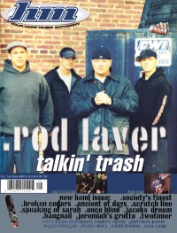

CMnexus
:
Contemporary Christian culture, music, and media.
Magazines
Profiles
Dove Awards
cmnexus.org
CM
nexus
→
Profiles
→
Writers: H
→
Kimberly Hall
Kimberly Hall
Writing credits listing
May 1998
in
HM
#71
The Halo Friendlies
Jul 1998
in
HM
#72
Redline
Jan 1999
in
HM
#75
Five Iron Frenzy
Mar 1999
in
HM
#76
Freeto Boat
Jul 1999
in
HM
#78
Rod Laver
Nov 1999
in
HM
#80
Stonefly
Mar 2000
in
HM
#82
The Appleseed Cast

May 2000
in
HM
#83
".troubled times"
Rod Laver
CMnexus
(noun)
The magazine index
of modern music
and Christianity
© 2011 CMnexus. Last updated August 2025.
Contact:
Rants and other correspondence to:
editor -AT- cmnexus
-DØT- org
About